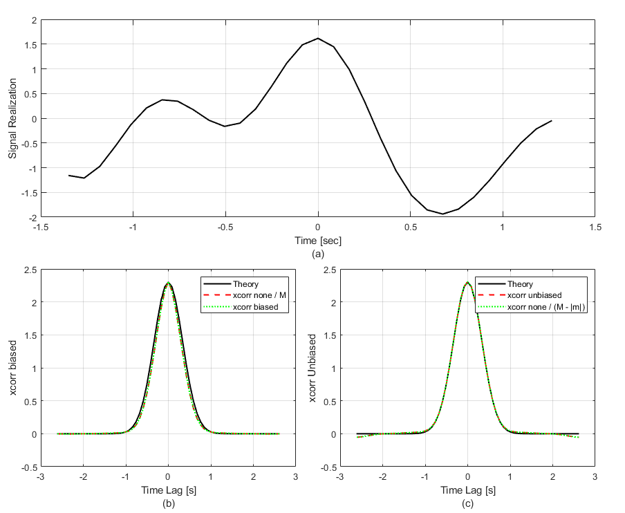

Unbiased Correlation of 1-D Random Processes
In the years since I wrote the book, I have had many occasions to use the function corr2_ft. Here, I provide more detail about computing the correlation of samples from a 1-D random process. This provides background for the 2-D calculation. At the end, this is illustrated with a code example.
Correlation is a widely used analysis tool. Mostly, I use it for analyzing random signals that occur in optical systems that collect data through atmospheric turbulence. For example, Section 9.5.5 in the book uses the ensemble average auto-correlation of the propagated field to verify that the turbulent wave-optics simulation exhibits the expected second-order field statistics. Other random signals like wavefront gradients, Zernike mode coefficients, and irradiance fluctuations can be analyzed with correlation. These can be 2-D spatial signals or 1-D temporal signals, depending on how they are measured. As I mention in Correlation Integral with Window Functions, Matlab provides the function xcorr to compute cross-correlations of 1-D functions. I encourage everyone to read the xcorr documentation. It is informative, particularly regarding the various normalization options. The 'unbiased' option is particularly relevant here, and the function corr2_ft in Section 3.2 of the book provides an analogous calculation for removing the bias of a 2-D spatial mask that occurs often in optics.
In this article, I first describe the calculation of unbiased correlation in 1-D. Then, I illustrate with an example that compares the output of the xcorr function to a correlation computed manually with FTs.
Unbiased Correlation in 1-D
In Some Statistical Definitions, I write the correlation of an ergodic random process \(u\left(t\right)\) as $$ \begin{equation} \Gamma_u\left(\tau\right) = \lim\limits_{T\to\infty} \frac{1}{T} \int\limits_{-T/2}^{T/2} u\left(t\right) u\left(t-\tau\right) \, \textrm{d}t. \end{equation} $$ In reality, we always observe the process \(u\left(t\right)\) over a finite period of time, described by a window function \(W\left(t\right)\). Accordingly, we can define a time-windowed function realization of the random process as \(u^{\prime}\left(t\right) = u\left(t\right) W\left(t\right)\). Thus, we always have the integral of the time-windowed realization $$ \begin{equation} I^{\prime}\left(\tau\right) = \int\limits_{-T/2}^{T/2} u^{\prime}\left(t\right) u^{\prime}\left(t-\tau\right) \, \textrm{d}t. \end{equation} $$ Assuming that \(T\) is longer than the window overlap, the integral can be written as $$ \begin{equation} I^{\prime}\left(\tau\right) = \int\limits_{W\left(t\right) W\left(t-\tau\right)} u\left(t\right) u\left(t-\tau\right) \, \textrm{d}t, \end{equation} $$ where the limits of integration are set by the nonzero duration of \(W\left(t\right) W\left(t-\tau\right)\). This has units of the random process squared \(\times\) time (seconds). To compute the average over the time window, we need to divide by the duration of the integration limits, which is \(\mathcal{A}\left(\tau\right)\) from Eq. (2) in Correlation Integral with Window Functions. Then the best approximation to the statistical correlation that we can make from time-windowed samples is $$ \begin{equation} \Gamma_u\left(\tau\right) \simeq \left\langle \frac{I^{\prime}\left(\tau\right)} {\mathcal{A}\left(\tau\right)} \right\rangle. \end{equation} $$ In this equation, \(\left\langle \ldots \right\rangle\) still indicates an ensemble average. In this case, we have a finite collection of realizations of \(u\left(t\right)\), so we perform the integral \(I^{\prime}\left(\tau\right)\) for each realization, divide by \(\mathcal{A}\left(\tau\right)\), and average the results.
The following code example generates random draws of a time-correlated process and then computes the biased and unbiased auto-correlation of each realization. The random process is generated using the function ftShGaussianProc1, which uses spectral partitioning to ensure that the simulated variance matches the analytical Power Spectral Density (PSD) integral.
The code compares the output of Matlab's xcorr function to the theoretical Gaussian covariance. Using the 'unbiased' option causes xcorr to normalize by the number of samples for each lag, given by M-abs(mLags). In plot (b) of the first figure, xcorr with the 'none' option divided by M and the 'biased' option match each other, but they exhibit a significant roll-off compared to theory. This discrepancy is the statistical bias caused by the windowing of the data.
This mismatch is rectified in plot (c). By using the 'unbiased' option, the calculation correctly recovers the absolute variance at zero lag and maintains the correct correlation width. The code also demonstrates the auto-correlation theorem using the ft and ift functions. Note that the random process is zero-padded before the FT operation to prevent circular correlation artifacts.
